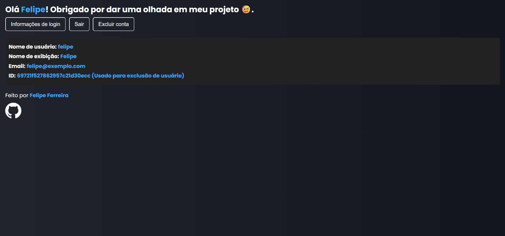
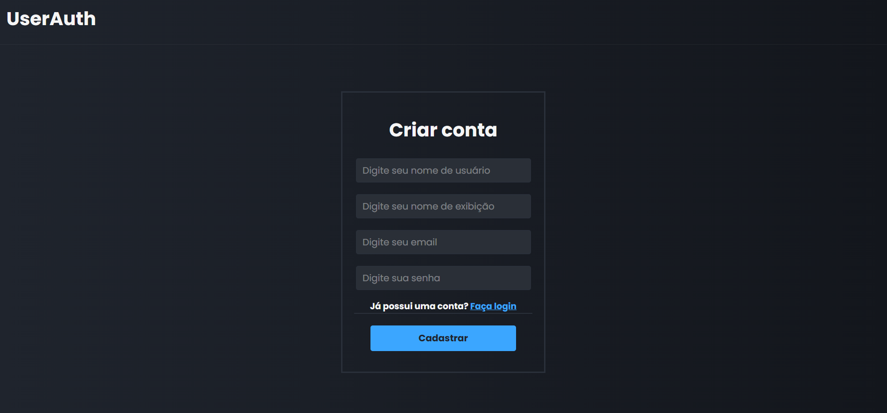
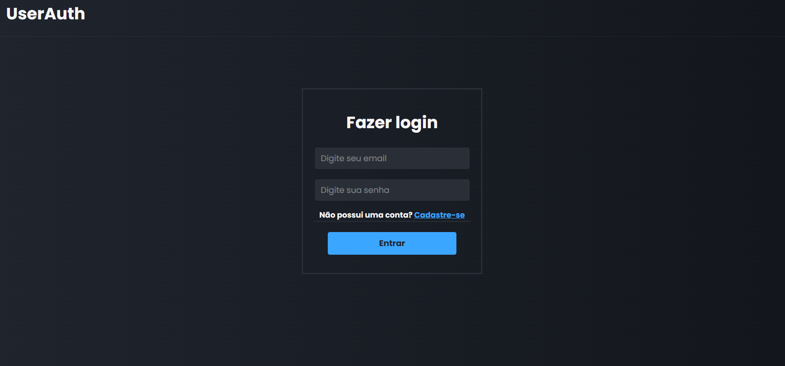

Imagens do projeto
Sobre o projeto:
Autenticação de usuários que conta com os seguintes recursos: cadastro, login, visualização de informações da conta. O MongoDB Atlas foi responsável por armazenar dados da conta do usuário e o Mongoose foi utilizado para realizar a integração com o MongoDB e a modelagem de dados. Dotenv permitiu armazenar variáveis de ambiente de uma maneira mais segura. Utilizei o bcrypt para realizar o hash de senhas de usuários antes de serem enviadas ao banco de dados. Por fim, o JWT (JsonWebToken) permitiu a proteção de rotas privadas da aplicação.
Tecnologias utilizadas:
Back-end
NodeJS, MongoDB Atlas, Mongoose, API REST e validação de dados.
Segurança
Hash de senhas, tokens JWT e variáveis de ambiente.
Front-end e outros
React, styled-components, javascript e git.